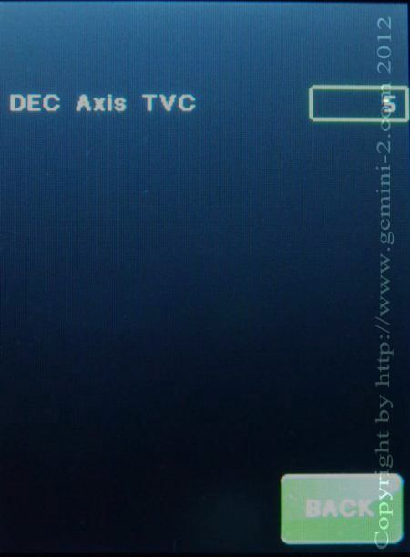

| Interactive Hand-Controller Menus - click on green button to Navigate |
|  |
TVC Menu is used to set the Dec backlash compensation.
Backlash is
caused by gear teeth not engaging the worm when reversing direction
for a bit, until the slack is taken up. Note: TVC may not do anything until you reverse DEC direction
at least once.
|
| Copyright by http://www.gemini-2.com |